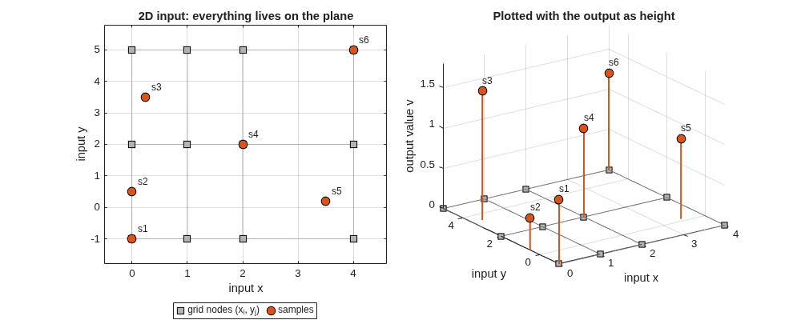
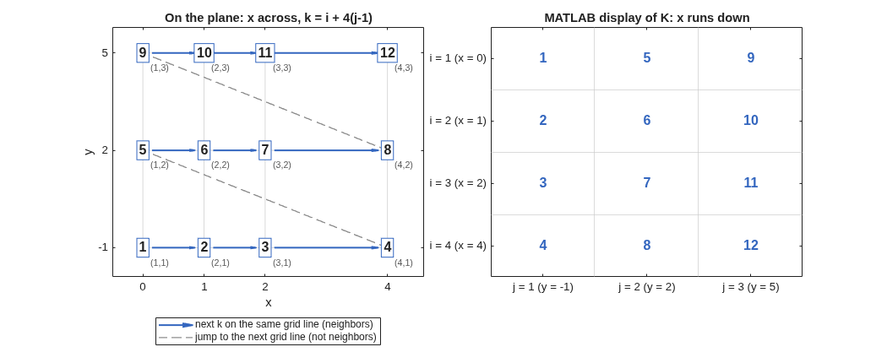
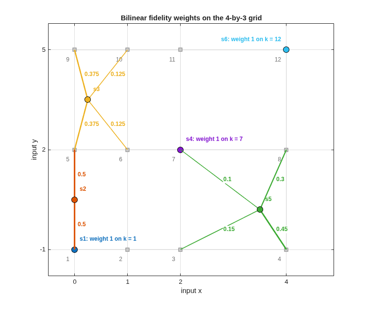
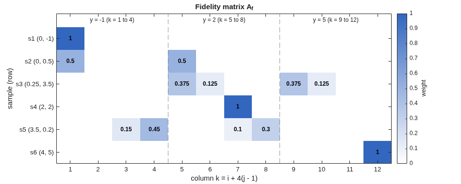
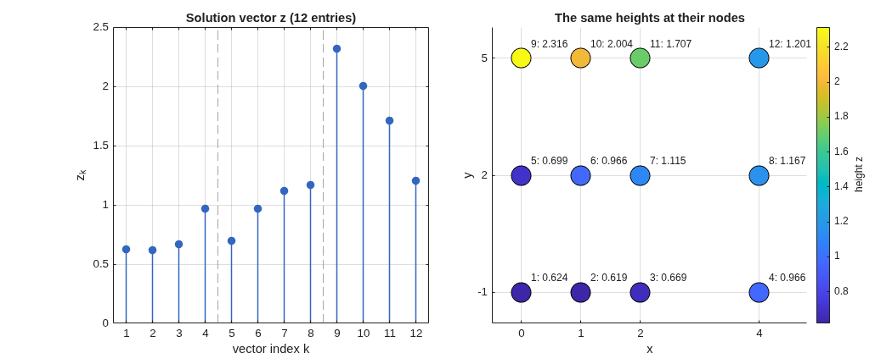

Number the nodes of a two-input grid as one vector of unknowns, in ndgrid order, and find each node’s neighbors in that vector.
Build bilinear fidelity rows, including samples on an edge or exactly on a node, and check that each row sums to one.
Write the second-difference rows along each axis, count them from the grid dimensions, normalize the stacked system, solve it, and unwrap the solution back into a table.
NoteSource and attribution
This page is adapted from two articles published on Math for Mere Mortals:
This page reworks those articles’ ideas for regularizeNd. The text, equations, examples, numbers, and figures are new to this site. The originals call a surface with two inputs “3D data.” regularizeNd calls it “2D input.”
Two inputs, one output
The one-input pages had one input variable. Here each sample has two inputs, \(x\) and \(y\), and one measured output \(v\). The originals call this “3D data,” since plotting the output takes three axes. regularizeNd counts the input variables instead and calls the data “2D input.” The two names describe the same data. Three things need separate names:
the inputs are points on the \((x, y)\) plane;
the output is a height above that plane, which is what a surface plot draws;
the unknowns are the table values \(Z_{ij}\) at the output-grid nodes \((x_i, y_j)\), one per node.
Everything before the solve happens on the plane. Heights enter only through the right-hand side.
The example file, fixtures/regularizeNdFoundationsFixtures.m, builds this page’s numbers from the equations and checks them. The example uses one output grid: \(x_i \in \{0,\ 1,\ 2,\ 4\}\) and \(y_j \in \{-1,\ 2,\ 5\}\). So \(n_x = 4\), \(n_y = 3\), and there are \(n_x n_y = 12\) unknowns. The \(x\) spacing is uneven. The last interval is twice as wide as the others. The grid is not square on purpose, and the numbering section explains why. Six samples cover the cases a fidelity row can meet:
Sample \(s\)
\((x, y)\)
Value \(v_s\)
Where it sits
1
\((0, -1)\)
0.8
exactly on a corner node
2
\((0, 0.5)\)
0.4
on the left edge \(x = 0\), between two nodes
3
\((0.25, 3.5)\)
1.6
inside a cell
4
\((2, 2)\)
1.1
exactly on an interior node
5
\((3.5, 0.2)\)
1.0
inside the wide \(x\) interval
6
\((4, 5)\)
1.2
exactly on a corner node
Show the MATLAB code
addpath('fixtures');r=regularizeNdFoundationsFixtures(Verbose=false);srf=r.surface;xg=srf.xGrid;yg=srf.yGrid;% output-grid vectorsP=srf.samples;v=srf.values;% sample inputs (x, y) and output valuesnx=numel(xg);ny=numel(yg);m=size(P,1);nU=nx*ny;[X,Y] =ndgrid(xg,yg);% node coordinates, both nx-by-ny
Show the MATLAB code
closeallfigure('Position', [1001001000420])tiledlayout(1,2,'TileSpacing','compact')gridGray= [0.70.70.7];sampleColor= [0.850.330.1];nexttileplot(X,Y,'-',X',Y','-','Color',gridGray,'HandleVisibility','off');holdonplot(X(:),Y(:),'s','MarkerSize',8,'MarkerFaceColor',gridGray,'MarkerEdgeColor','k',...'DisplayName','grid nodes (x_i, y_j)')plot(P(:,1),P(:,2),'o','MarkerSize',8,'MarkerFaceColor',sampleColor,'MarkerEdgeColor','k',...'DisplayName','samples')text(P(:,1) +0.1,P(:,2) +0.3,compose('s%d', (1:m)'),'FontSize',9)xlim([-0.54.6]);ylim([-1.85.8]);gridonxlabel('input x');ylabel('input y')title('2D input: everything lives on the plane')legend('Location','southoutside','Orientation','horizontal')nexttileplot3(X,Y,zeros(nx,ny),'-',X',Y',zeros(ny,nx),'-','Color', [0.450.450.45]);holdonplot3(X(:),Y(:),zeros(nU,1),'s','MarkerSize',7,'MarkerFaceColor',gridGray,'MarkerEdgeColor','k')plot3([P(:,1) P(:,1)]', [P(:,2) P(:,2)]', [zeros(m,1) v]','-','Color',sampleColor,'LineWidth',1.5)plot3(P(:,1),P(:,2),v,'o','MarkerSize',8,'MarkerFaceColor',sampleColor,'MarkerEdgeColor','k')text(P(:,1),P(:,2),v+0.12,compose('s%d', (1:m)'),'FontSize',9)xlabel('input x');ylabel('input y');zlabel('output value v')zlim([01.8]);gridon;view(-35,25)title('Plotted with the output as height')

Figure 1: Left: the 2D input. Samples (circles) and output-grid nodes (squares) lie on the \((x, y)\) plane. Right: the same samples with their values drawn as heights above the grid. The originals call this 3D data because of that third axis. regularizeNd counts only the two inputs.
Numbering the grid nodes
Least squares needs one vector \(z\) of unknowns. Each fidelity row has to know which entries of \(z\) its weights multiply. The table is a 4-by-3 array. The nodes therefore need a fixed position in a vector, and every equation has to use the same numbering.
regularizeNd numbers the nodes in the order of Z(:) for a table built with ndgrid. The first subscript, \(i\) along \(x\), varies fastest:
\[
k = i + (j - 1)\,n_x, \qquad i = 1,\dots,n_x,\quad j = 1,\dots,n_y .
\]
For this grid, \(k = i + 4(j - 1)\). Numbers 1 to 4 run along \(x\) at \(y_1 = -1\), numbers 5 to 8 at \(y_2 = 2\), and 9 to 12 at \(y_3 = 5\). In MATLAB this is reshape(1:12, [4 3]), and sub2ind([4 3], i, j) gives the same numbers.
Show the MATLAB code
K=reshape(1:nU, [nxny]);% K(i,j) is the vector position of node (x_i, y_j)assert(isequal(K,srf.indexTable))assert(isequal(K(3,2),3+4*(2-1),sub2ind([nxny],3,2)))
The display can mislead. MATLAB prints this array with \(x\) running down the rows. On a plot with \(x\) horizontal, \(x\) runs across. Figure 2 shows both views. They hold the same twelve numbers, with rows and columns swapped.
Show the MATLAB code
closeallfigure('Position', [1001001050430])tiledlayout(1,2,'TileSpacing','compact')blue= [0.20.40.75];nexttileplot(X,Y,'-',X',Y','-','Color', [0.850.850.85],'HandleVisibility','off');holdonfork=1:nU-1ifmod(k,nx) ~=0d= [X(k+1) -X(k),Y(k+1) -Y(k)];% shortened so the head clears the labelsh1=quiver(X(k) +0.15*d(1)/norm(d),Y(k),d(1) -0.3*d(1)/norm(d),d(2),0,...'Color',blue,'LineWidth',1.5,'MaxHeadSize',0.4/norm(d));elseh2=plot([X(k) X(k+1)], [Y(k) Y(k+1)],'--','Color', [0.550.550.55],'LineWidth',1);endendfork=1:nU [i,j] =ind2sub([nxny],k);text(X(k),Y(k),sprintf('%d',k),'FontWeight','bold','FontSize',12,...'HorizontalAlignment','center','BackgroundColor','w','EdgeColor',blue,'Margin',2)text(X(k) +0.12,Y(k) -0.45,sprintf('(%d,%d)',i,j),'FontSize',8,'Color', [0.350.350.35])endxlim([-0.54.6]);ylim([-1.95.8])xticks(xg);yticks(yg)xlabel('x');ylabel('y')title('On the plane: x across, k = i + 4(j-1)')legend([h1h2], {'next k on the same grid line (neighbors)','jump to the next grid line (not neighbors)'},...'Location','southoutside')nexttileimagesc(zeros(nx,ny));colormap(gca, [111]);holdonfori=1:nxforj=1:nytext(j,i,sprintf('%d',K(i,j)),'FontWeight','bold','FontSize',12,...'HorizontalAlignment','center','Color',blue)endendxline(1.5:ny-0.5,'Color', [0.80.80.8]);yline(1.5:nx-0.5,'Color', [0.80.80.8]);axisij;axistightxticks(1:ny);xticklabels(compose('j = %d (y = %g)', (1:ny)',yg))yticks(1:nx);yticklabels(compose('i = %d (x = %g)', (1:nx)',xg))title('MATLAB display of K: x runs down')

Figure 2: Left: the 4-by-3 output grid on the \((x, y)\) plane. Each node carries its vector index k and its subscripts (i, j). Arrows follow k along a grid line. The dashed jumps, 4 to 5 and 8 to 9, cross to the next line and do not join neighbors. Right: the same index table as MATLAB prints K, with x running down the rows.
The swap leaves the numbering alone. The vector \(z\) is the same either way. Only the layout on screen changes, and the layout has to match when a table crosses a function boundary. MATLAB’s meshgrid and surf(xVector, yVector, Z) use the plot layout. That layout is an \(n_y\)-by-\(n_x\) array with \(x\) across. regularizeNd’s output and griddedInterpolant use the ndgrid layout, an \(n_x\)-by-\(n_y\) array with \(x\) down. The two layouts are transposes of each other:
On a square grid, a missing transpose mirrors the table across its diagonal without an error. On this 4-by-3 grid, surf(xg, yg, K) stops with a dimension error, and surf(xg, yg, K') works. The surface figure in the solving section uses the transposed form.
Neighbors in the vector
On the plane, a node’s neighbors are easy to see. In the vector, they follow from the formula for \(k\).
Along \(x\), nodes \((i, j)\) and \((i+1, j)\) have indices \(k\) and \(k+1\). Consecutive indices are not always neighbors. Indices 4 and 5 differ by one, but 4 ends the line \(y = -1\) and 5 starts the line \(y = 2\). The same holds for 8 and 9.
Along \(y\), nodes \((i, j)\) and \((i, j+1)\) have indices \(k\) and \(k + n_x = k + 4\). This holds for every node.
That gives \((n_x - 1)\,n_y = 9\) pairs along \(x\), all one apart, and \(n_x(n_y - 1) = 8\) pairs along \(y\), all four apart. The four corners of a cell, \(k\), \(k+1\), \(k+4\), and \(k+5\), are not a block of consecutive entries. The derivative rows below use the same two offsets, 1 along \(x\) and \(n_x\) along \(y\).
Bilinear fidelity weights
The one-input pages read a table between two nodes with one fraction \(t\). With two inputs, a sample \((x, y)\) lies in a cell \([x_i, x_{i+1}] \times [y_j, y_{j+1}]\). Each axis gets its own fraction, measured in its own interval:
Interpolate linearly along \(x\) on the two edges of the cell that run in \(x\), then linearly along \(y\) between those two results. Each corner’s weight is the product of its \(x\) weight and its \(y\) weight:
In vector positions, with \(k = i + 4(j-1)\) for the lower-left corner, the four weights land in columns \(k\), \(k+1\), \(k+4\), and \(k+5\).
Two properties carry over from one dimension.
The weights sum to one. Their sum is \(\big((1 - t_x) + t_x\big)\big((1 - t_y) + t_y\big) = 1\), so a constant table reads back as that constant.
The rows reproduce planes and the \(xy\) term exactly. Inside a cell, \(\hat z\) is a combination of \(1\), \(t_x\), \(t_y\), and \(t_x t_y\), which is the same as a combination of \(1\), \(x\), \(y\), and \(xy\). If the table holds node values of \(f(x, y) = a + bx + cy + dxy\), the row returns \(f\) at the sample exactly.
The rows do not reproduce terms in \(x^2\) or \(y^2\). Along \(x\) the row interpolates linearly, as in one dimension, so the error is largest in wide cells. Nonuniform spacing affects the accuracy as well as the weights.
Three samples by hand
Sample 3, \((0.25, 3.5)\), inside a cell.\(x = 0.25\) lies in \([0, 1]\) and \(y = 3.5\) lies in \([2, 5]\). The lower-left corner is \((i, j) = (1, 2)\), which is \(k = 5\). The fractions are \(t_x = 0.25\) and \(t_y = (3.5 - 2)/3 = 0.5\):
Corner
Column
Weight
\((x_1, y_2) = (0, 2)\)
5
\((1 - 0.25)(1 - 0.5) = 0.375\)
\((x_2, y_2) = (1, 2)\)
6
\(0.25 \cdot (1 - 0.5) = 0.125\)
\((x_1, y_3) = (0, 5)\)
9
\((1 - 0.25) \cdot 0.5 = 0.375\)
\((x_2, y_3) = (1, 5)\)
10
\(0.25 \cdot 0.5 = 0.125\)
The sample sits halfway up its cell, so the weight splits evenly between the bottom and top corners. It sits a quarter of the way across, so the left corners carry three times the weight of the right ones.
Sample 5, \((3.5, 0.2)\), inside the wide cell.\(x = 3.5\) lies in \([2, 4]\), an interval of width 2, so \(t_x = (3.5 - 2)/2 = 0.75\). \(y = 0.2\) lies in \([-1, 2]\), so \(t_y = (0.2 + 1)/3 = 0.4\). The lower-left corner is \((3, 1)\), which is \(k = 3\):
Corner
Column
Weight
\((x_3, y_1) = (2, -1)\)
3
\(0.25 \cdot 0.6 = 0.15\)
\((x_4, y_1) = (4, -1)\)
4
\(0.75 \cdot 0.6 = 0.45\)
\((x_3, y_2) = (2, 2)\)
7
\(0.25 \cdot 0.4 = 0.10\)
\((x_4, y_2) = (4, 2)\)
8
\(0.75 \cdot 0.4 = 0.30\)
The sample is 1.5 units from \(x_3\), three quarters of the way across an interval of width 2. Dividing by 1 instead of 2 would give 1.5, a fraction outside the cell. Each axis’s fraction must use the width of its own interval.
Sample 2, \((0, 0.5)\), on an edge.\(x = 0\) is the node \(x_1\) itself, so \(t_x = 0\), and \(t_y = (0.5 + 1)/3 = 0.5\). The corners on the right carry the factor \(t_x = 0\), so they vanish. What remains is linear interpolation along the grid line \(x = 0\): weight 0.5 on column 1 (node \((0, -1)\)) and 0.5 on column 5 (node \((0, 2)\)).
Samples 1, 4, and 6, on nodes. When both fractions are 0, only the \((1 - t_x)(1 - t_y)\) weight survives, and it equals 1. Sample 4 gets a single weight of 1 on column \(3 + 4 \cdot 1 = 7\), and sample 1 a single 1 on column 1. Sample 6 sits on the far corner \((4, 5)\), in the last cell \([2, 4] \times [2, 5]\), where both fractions are 1. Only the \(t_x t_y = 1\) weight survives, on column 12. Each of these rows says only that one table value should be close to \(v_s\).
Building all six rows in code
The cell below builds all six rows at once. discretize finds each sample’s cell along each axis. The per-axis weights multiply corner by corner, and sub2ind turns corner subscripts into columns. Every sample passes all four corners to sparse, zero weights included. sparse drops the zeros, which is why node and edge rows store fewer than four entries.
Sample 6’s cell is \((3, 2)\), the last cell, with \(t_x = t_y = 1\). Of the 24 corner weights passed to sparse, 11 are zero. \(A_f\) stores 13 nonzeros out of 72 entries.
Next, check that the rows reproduce a known function. Evaluate a function on the nodes, stack the values in ndgrid order with (:), and compare \(A_f z\) with the function at the samples:
The fidelity rows reproduce the bilinear test function to round-off. Flatten the meshgrid layout instead, and the same twelve values land in the wrong columns, so the error is no longer small. For \(x^2\), only samples 3 and 5 are off. Those are the two with \(0 < t_x < 1\). In each cell the overshoot is \((x - x_i)(x_{i+1} - x)\). For sample 3 in a unit-width interval that is \(0.25 \cdot 0.75 = 0.1875\). For sample 5 in the interval of width 2 it is \(1.5 \cdot 0.5 = 0.75\).
Figure 3 draws every row on the plane, and Figure 4 shows the assembled matrix.
Show the MATLAB code
closeallfigure('Position', [100100760640])plot(X,Y,'-',X',Y','-','Color', [0.850.850.85]);holdonplot(X(:),Y(:),'s','MarkerSize',7,'MarkerFaceColor', [0.80.80.8],'MarkerEdgeColor', [0.50.50.5])text(X(:) -0.1,Y(:) -0.3,compose('%d', (1:nU)'),'Color', [0.450.450.45],...'HorizontalAlignment','right','FontSize',9)colors=lines(m);fors=1:m [~,cols,w] =find(Af(s,:));forq=1:numel(cols)ifnumel(cols) >1plot([P(s,1) X(cols(q))], [P(s,2) Y(cols(q))],'-','Color',colors(s,:),'LineWidth',0.8+3*w(q))mid=P(s,:) +0.5*([X(cols(q)) Y(cols(q))] -P(s,:));text(mid(1) +0.06,mid(2),sprintf('%.3g',w(q)),'Color',colors(s,:),...'FontSize',9,'FontWeight','bold','BackgroundColor','w','Margin',0.5)endendplot(P(s,1),P(s,2),'o','MarkerSize',9,'MarkerFaceColor',colors(s,:),'MarkerEdgeColor','k')label=sprintf('s%d',s);ifnumel(cols) ==1,label=sprintf('s%d: weight 1 on k = %d',s,cols);endalign='left';dx=0.1;ifP(s,1) >3.9,align='right';dx=-0.1;endtext(P(s,1) +dx,P(s,2) +0.3,label,'Color',colors(s,:),'FontSize',9,...'FontWeight','bold','HorizontalAlignment',align)endxlim([-0.54.9]);ylim([-1.85.8]);xticks(xg);yticks(yg);gridonxlabel('input x');ylabel('input y')title('Bilinear fidelity weights on the 4-by-3 grid')

Figure 3: Each sample (filled circle) connects to the grid nodes its fidelity row uses, with the weight on each line. Gray numbers are the node indices k. Samples 1, 4, and 6 sit exactly on nodes and use one weight of 1. Sample 2 sits on the edge x = 0 and uses two. Samples 3 and 5 use all four corners of their cells.
Show the MATLAB code
closeallfigure('Position', [100100950380])A=full(Af);imagesc(A);holdoncolormap(interp1([01], [111;0.20.40.75],linspace(0,1,256)))clim([01]);cb=colorbar;cb.Label.String='weight';[ri,ci] =find(A);forq=1:numel(ri)text(ci(q),ri(q),sprintf('%.3g',A(ri(q),ci(q))),'HorizontalAlignment','center',...'FontSize',9,'FontWeight','bold','Color','k')endxline([4.58.5],'--','Color', [0.40.40.4])text([2.56.510.5], [0.20.20.2],compose('y = %g (k = %d to %d)',yg, (1:4:9)', (4:4:12)'),...'HorizontalAlignment','center','FontSize',9)axisij;ylim([-0.1m+0.5]);xlim([0.5nU+0.5])xticks(1:nU);yticks(1:m)yticklabels(compose('s%d (%g, %g)', (1:m)',P(:,1),P(:,2)))xlabel('column k = i + 4(j - 1)');ylabel('sample (row)')title('Fidelity matrix A_f')

Figure 4: This is the 6-by-12 fidelity matrix A_f. Rows are samples. Columns are the nodes in ndgrid order, grouped by grid line y = -1, 2, 5, with dashed separators. Blank cells are zeros that the matrix does not store. A full cell’s four weights form two pairs of adjacent columns, and the pairs sit 4 columns apart.
Why four corners rather than a triangle
Another option cuts each cell into two triangles along a diagonal and interpolates linearly inside the triangle that holds the sample. Each row then has three weights instead of four. A cell has two diagonals, though, and the weights depend on which one is drawn. Take sample 5 again, at \((t_x, t_y) = (0.75, 0.4)\), in the cell with corner columns 3, 4, 7, and 8. The cell below solves for the triangle weights for each diagonal and reads the test function \(f = xy\) at the sample:
Show the MATLAB code
cx= [2424]';cy= [-1-122]';cornerCols= [3478];splits= {[124], [234]};% triangle holding the sample for each diagonalWtri=zeros(2,4);ford=1:2c=splits{d};Wtri(d,c) = ([111;cx(c)';cy(c)'] \ [1;P(5,1);P(5,2)])';endWall= [Wtri;full(Af(5,cornerCols))];fCorners=cx.*cy;valueOfXY=Wall*fCorners;table(["diagonal 3–8";"diagonal 4–7";"bilinear"],Wall,valueOfXY,...VariableNames=["scheme","weights on columns 3, 4, 7, 8","reads x*y as"])exactXY=P(5,1) *P(5,2);
With the diagonal from column 3 to column 8, the weights are 0.25, 0.35, and 0.4 on columns 3, 4, and 8. With the other diagonal, they are 0.6, 0.25, and 0.15 on columns 4, 7, and 8. Both are linear interpolation on their triangle, and both reproduce any plane. They still give the sample two different fidelity rows. Those rows read \(xy\), whose exact value at this sample is 0.7, as 1.3 and \(-0.2\). The bilinear row uses all four corners. It needs no choice of diagonal and returns 0.7.
Second differences along each axis
The fidelity rows say nothing about the surface between samples. The smoothness rows handle that. Each is a three-point second difference along a grid line, the same stencil as in one dimension. It takes the node and its two neighbors on that line, centered on each interior node.
The stencils depend on the spacing. Along \(x\), each \(y\)-line has two stencils. The first sits on \(x = 0, 1, 2\), which are evenly spaced, and has weights \([1, -2, 1]\). The second sits on \(x = 1, 2, 4\) and has weights \([\tfrac23, -1, \tfrac13]\), because the last interval is wider. Along \(y\) the grid is \(-1, 2, 5\), evenly spaced with spacing 3, so one stencil has weights \([\tfrac19, -\tfrac29, \tfrac19]\).
Counting the rows
The count comes from the grid, not the samples. Each \(y\)-line has \(n_x - 2\) interior nodes, and there are \(n_y\) such lines. Each \(x\)-line has \(n_y - 2\) interior nodes, and there are \(n_x\) such lines:
For this grid, \(N_x = 2 \cdot 3 = 6\) and \(N_y = 4 \cdot 1 = 4\), so there are ten derivative rows. The originals count the same way for an \(M\)-by-\(N\) grid.
An \(x\)-row covers three consecutive columns, because the first subscript varies fastest. A \(y\)-row covers three columns spaced \(n_x = 4\) apart. Figure 5 draws each row as a line through its three nodes.
Figure 5: The unscaled second-difference rows are drawn as lines through their three nodes. Left: the six x-direction rows, which run along each y-line in blue. Right: the four y-direction rows, which run up each x-line in orange. Each row is labeled with its number.
Counting the derivative rows that touch each node shows the stacking. Two \(x\)-rows touch each interior node of a \(y\)-line, and one touches each end node. Exactly one \(y\)-row touches every node, because the \(y\)-grid has only three nodes. So there is one \(y\)-stencil per \(x\)-line, and it runs across the whole line.
Show the MATLAB code
touchX=sum(Dx~=0,1);touchY=sum(Dy~=0,1);
The stacked pattern
Figure 6 shows the full system \(\mathbf{A} z \approx \mathbf{b}\). Its rows are the six fidelity rows, the six \(x\)-rows scaled by \(\mu_x\), and the four \(y\)-rows scaled by \(\mu_y\). The next section defines the scales. The left panel shows the scaled system. The right panel shows its normal matrix \(\mathbf{A}^T\mathbf{A}\), which the default solver forms. The deep dive discusses it.
Figure 6: Left: the stacked 16-by-12 system with scaled weights, in three blocks: fidelity (rows 1 to 6), x-derivatives (rows 7 to 12), y-derivatives (rows 13 to 16). Right: the normal matrix A^T A, drawn as a sparsity pattern. Its bandwidth is set by the y-stencils, which couple nodes eight columns apart.
The stacked system has \(6 + 6 + 4 = 16\) rows and 12 columns. It has 43 nonzeros: 13 in \(A_f\), 18 in the six \(x\)-rows, and 12 in the four \(y\)-rows.
Normalizing the stacked system
The derivative rows need a weight relative to the fidelity rows. Otherwise the answer depends on how many rows each block happens to have. regularizeNd’s one-input rule is \(s\sqrt{n_s/N}\,(x_{\max} - x_{\min})^2\), with \(n_s\) samples and \(N\) derivative rows. Here the rule applies to each axis, with that axis’s row count \(N_k\) and span:
The row factors \(\sqrt{n_s/N_k}\) are \(1\) on \(x\) and \(1.2247\) on \(y\). The range factors are \(16\) and \(36\). The axes get separate row factors because their row counts differ. A single factor from the total count, \(\sqrt{6/10} = 0.7746\), would apply to both. Each range factor matches the rows of one axis to that axis’s span.
Solve the stacked system directly. Then check the same answer from the normal equations \((\mathbf{A}^T\mathbf{A})\,z = \mathbf{A}^T\mathbf{b}\).
Show the MATLAB code
A=srf.system;rhs=srf.rhs;z=A\rhs;% least-squares solve of the stacked systemzNormal= (A'*A) \ (A'*rhs);% normal equations, same answernormalGap=max(abs(zNormal-z));assert(normalGap<1e-13&&max(abs(z-srf.solution)) <1e-12)assert(rank(full(A)) ==nU)rankFidelityOnly=rank(full(Af));
Each entry of \(z\) is one node’s height. The vector is in ndgrid order, so reshape puts each entry back at its own subscript. That is the unwrapping step:
Show the MATLAB code
Z=reshape(z, [nxny]);% ndgrid table: rows along x, columns along yassert(max(abs(Z-srf.table), [],'all') <1e-12)assert(Z(3,2) ==z(3+ (2-1)*nx)) % entry (i, j) sits at k = i + (j - 1) n_x
\[
Z = \begin{bmatrix}
0.623525&0.699225&2.315555\\
0.619028&0.966435&2.003685\\
0.668826&1.115112&1.707199\\
0.966056&1.167448&1.201386
\end{bmatrix}.
\]
Figure 7 shows the same numbers twice. On the left, \(z\) is a list of twelve heights. On the right, each height sits at its node.
Show the MATLAB code
closeallfigure('Position', [1001001050430])tiledlayout(1,2,'TileSpacing','compact')blue= [0.20.40.75];nexttilestem(1:nU,z,'filled','Color',blue,'LineWidth',1.2)xline([4.58.5],'--','Color', [0.50.50.5])xticks(1:nU);xlim([0.5nU+0.5]);gridonxlabel('vector index k');ylabel('z_k');title('Solution vector z (12 entries)')nexttilescatter(X(:),Y(:),300,z,'filled','MarkerEdgeColor','k')colormap(parula);cb=colorbar;cb.Label.String='height z';text(X(:) +0.15,Y(:) +0.35,compose('%d: %.3f', (1:nU)',z),'FontSize',9)xticks(xg);yticks(yg);xlim([-0.54.8]);ylim([-1.85.8]);gridonxlabel('x');ylabel('y');title('The same heights at their nodes')

Figure 7: Left: the solution vector z, twelve entries in vector order. Right: the same values at their nodes on the \((x, y)\) plane, each labeled with its index k and height. The placement on the right is the unwrapping, and reshape does it.
Draw the surface from the table. surf takes the plot layout, so the figure passes Z', as the numbering section warned.
Figure 8: The figure draws the regularized surface from the ndgrid table with surf(xg, yg, Z’). Dots mark the six samples at their measured heights. The surface misses them because the fit trades fidelity against smoothness.
The fitted values at the samples are the rows of \(A_f z\):
The fitted values \((A_f z)_s\) at samples 1 to 6 are 0.623525, 0.661375, 1.501808, 1.115112, 0.996795, and 1.201386. The fit compromises: sample 2 has the value 0.4 but fits at 0.661, and sample 3 has the value 1.6 but fits at 1.502. The fidelity sum of squared errors is 0.1093, and the scaled derivative sum of squared errors is 0.0693. The fidelity rows alone have rank 6, which cannot fix twelve unknowns. The ten derivative rows raise the full system to rank 12, so the solution is unique.
Connection to regularizeNd
The package builds the same two pieces. regularizeNdMatrices(P, {xg, yg}, smoothness, interpMethod) returns the fidelity matrix and one scaled second-difference block per axis. regularizeNd(P, v, {xg, yg}, smoothness, interpMethod, solver) stacks them, solves, and returns the table. Here P has one column per input, so this page’s \(y\) is its second column.
The check below runs when the page renders. It compares the package’s fidelity block with \(A_f\), its two scaled blocks with \(\mu_x D_x\) and \(\mu_y D_y\), and its two solved tables with \(Z\). It prints the largest differences. A hidden setup cell adds the regularizeNd source folder to the MATLAB path before the check runs, if that folder exists. When the folder is not present, the check is skipped with a message.
Show the MATLAB code
if~haveRegularizeNddisp('regularizeNd source folder not found. Package checks skipped.')else% The package's matrices and solves for this page's samples, grid, and smoothness. [AfPkg,LregPkg] =regularizeNdMatrices(P, {xg,yg},0.03,'linear');ZPkgNormal=regularizeNd(P,v, {xg,yg},0.03,'linear');% default solver: "normal"ZPkgBackslash=regularizeNd(P,v, {xg,yg},0.03,'linear','\');% stacked system, backslashfidelityGap=max(abs(full(AfPkg-Af)), [],'all');xBlockGap=max(abs(full(LregPkg{1} -mu(1)*Dx)), [],'all');yBlockGap=max(abs(full(LregPkg{2} -mu(2)*Dy)), [],'all');normalGapPkg=max(abs(ZPkgNormal-Z), [],'all');backslashGapPkg=max(abs(ZPkgBackslash-Z), [],'all');fprintf('Largest difference from this page:\n');fprintf(' fidelity block %.2e, x-derivative block %.2e, y-derivative block %.2e\n',...fidelityGap,xBlockGap,yBlockGap);fprintf(' default solve %.2e, backslash solve %.2e\n',normalGapPkg,backslashGapPkg);tolPkg=1e-12;assert(fidelityGap<tolPkg&&xBlockGap<tolPkg&&yBlockGap<tolPkg)assert(normalGapPkg<tolPkg&&backslashGapPkg<tolPkg)assert(isequal(size(ZPkgNormal), [nxny]) &&isequal(size(ZPkgBackslash), [nxny]))end
Largest difference from this page:
fidelity block 0.00e+00, x-derivative block 0.00e+00, y-derivative block 0.00e+00
default solve 1.55e-15, backslash solve 8.88e-16
regularizeNd scales each axis on its own. For axis \(k\), regularizeNdMatrices multiplies by \(\sqrt{n_s/N_k}\) and by the squared span \((x_{k,\max} - x_{k,\min})^2\) (regularizeNdMatrices.m, lines 437 and 441). The package computes the total smoothness-row count, but it only sizes the zero block that pads the right-hand side (regularizeNd.m, lines 270 and 272). No scale factor uses it, so the package does not apply the combined factor \(\sqrt{n_s/N}\).
Each axis can take its own smoothness value. The package takes a scalar, which applies to every axis, or a vector with one entry per input column (regularizeNd.m, lines 216–222; regularizeNdMatrices.m, lines 155–160). This page passes a scalar.
The output is the ndgrid table. regularizeNd reshapes the solution to the sorted grid sizes and then applies ipermute to undo its internal axis reordering (regularizeNd.m, lines 249–253 and 298–302). The sizes \([4\ 3]\) sort to \([3\ 4]\), so the reordering happens on this grid. The table has \(n_x\) rows and \(n_y\) columns, the shape griddedInterpolant takes (regularizeNd.m, lines 105–106 and 113–114). surf needs the transpose.
The default solver is "normal" (regularizeNd.m, line 199). It solves \((A^TA)z = A^Tb\) (line 272), the same normal equations the solving section checks by hand. Forming \(A^TA\) squares the condition number of \(A\). The package’s own notes warn against "normal" when the smoothing value is small, because the equations then become less well conditioned (regularizeNd.m, lines 65–66). The '\' solver here works on the stacked system directly. The deep dive’s solve stage and why the normal solver is often faster sections cover the trade-off.
This page covers one surface on one grid. It is not a resolution study. The resolution study on the one-input page shows the fits converging under refinement. This page does not refine the surface, so the results show no convergence.
Terminology: the originals call a two-input surface “3D data” and write its output as \(z\), so the system reads \(Az = b\). This site uses regularizeNd’s terms: “2D input” for the inputs, and y for the output (the originals’ \(z\)).
Numbering and display: the originals number the grid row by row (1–5, then 6–10), so each numbered row runs along \(x\). That is the same vector order as ndgrid. Only the display differs.
Grid shape: the originals work with a 5-by-5 grid and also show a 5-by-4 grid. This page uses a 4-by-3 grid with nonuniform \(x\) spacing, so an untransposed table fails with a size error.
Derivative scale: the original gives one scale for the whole system, based on the total derivative count, and has no span factor. regularizeNd scales each axis by its own row count and by its own span squared. With the combined count alone, the factor on this grid would be \(0.7746\), while the per-axis factors are \(1\) and \(1.2247\), and the range factors are 16 and 36.
Interpolation choice: the original argues for bilinear over triangle interpolation with diagrams. This page makes the same argument with a computed sample and the test function \(xy\).
Solver: the original works in a spreadsheet. This page uses sparse linear algebra and never forms an explicit inverse.